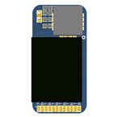
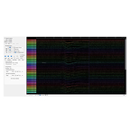
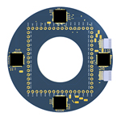
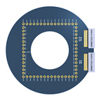
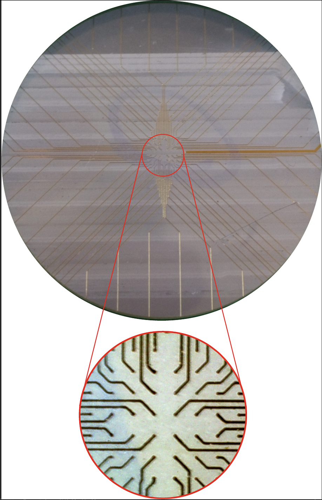

Contributing to the access to science
Nerve Tools is an open-source project that aims to democratize access to science. The ultimate goal is to assist scientists and enthusiast students, especially in undeveloped countries, to build and design bioinstruments if needed.
Our philosophy is to share for free the tools developed by Dr. Marcelo Aguilar-Rivera after they have been published.
Work in progress
Tiny Headstage (HS)
This is an amplifier system for 64 chs based on INTAN technology. The footprint of the first board version (V1) is 12 mm x 18 mm x 4 mm, including chips and connectors. We are working on a second version (V2) that should be smaller than V1. This system got rid of the Omnetics connectors cutting down the bill of materials (BOM). An INTAN cable, after been cut in half, can be soldered directly to the twelve pads array as in V2, contributing to reduce the cost of the BOM. Optionally, researchers can choose the V1 that uses a 12-pin Omnetics PZN-12-AA connector for more versatility. Both versions of this Tiny HS can be interfaced with INTAN RHD controllers. The communication between the Tiny HS and the control board is SPI over LVDS as designed by INTAN.
INTAN GUI & Tiny HS
INTAN Graphical User Interface (GUI) depicting the interface of a Tiny HS with the INTAN hardware and software. These tests were performed in Dr. Pablo Fuentealba's lab.
Brain Dish Project
Pictorical representation of a 64chs ring based on four RHS Stim/Amplifier INTAN chips that can be interfaced with a electrodes array in a dish.
Brain Dish project
Pictorical representation of a 64chs ring based on four RHS Stim/Amplifier INTAN chips that can be interfaced with a electrodes array in a dish.
Brain Dish project
The main picture represents a 64 electrodes array printed on a flexible substrate, while the insert is a 100x amplification of the array center covering an area of 1.5 mm^2. Each trace is 50 um width and 1 oz thick. The tip of each electrode is 60 um of diameter.
In our catalog, you can find the parts that are available to download for free.